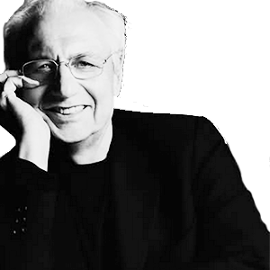
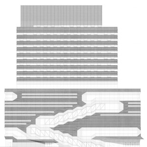
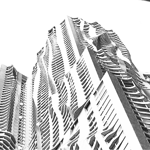
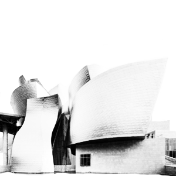
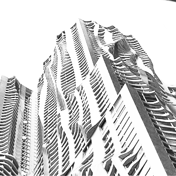
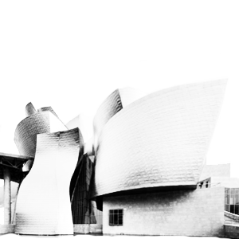

The New School's Parsons School of Design,in collaboration with The Guggenheim Museum,hosts Frank Gehry At The Parsons Table with Paul Goldberger on Thursday, November 12, 6-8 p.m. in Tishman Auditorium ,at The New School University Center, 63 Fifth Ave.In this, one-on-one conversation,Goldberger,Pulitzer PrizeThe Pulitzer Prize is an award for achievements in newspaper and online journalism,literature,and musical composition in the United States winning architectural critic and Joseph Urban Chair in Design and Architecture at Parsons, will engage Gehry on his life and work. Building Art: The Life and Work of Frank GehryGehry is known for his use of bold,postmodern shapes, eclectic style and original building materials, Goldberger's recently published full-length biography on Gehry, will be available for purchase in the lobby of the University Center during the event. At the Parsons Table is an on-going series of conversational interviews with cultural luminaries hosted by Goldberger. These conversations provide exclusive insights into the creative process and innovative thinking of artists, designers, and industry leaders. At the Parsons Table guests have included such icons as Ralph Lauren, Mickey Drexler, Robert Wong, Frank GehryFrank Gehry was born Frank Owen Goldberg in Toronto, Canada on February 28, 1929, Chuck Close, Bruce Mau and Donna Karan. Frank Gehry“Vanity Fair” has referred to him as “The most important architect of our age.” has designed buildings that have become world-renowned attractions. His work includes The Disney Concert Hall, home of the Los Angeles philharmonic, 8 Spruce Street in New York City, the Guggenheim Museum in Bilbao,Spain, and the Louis Vuitton Foundation building in Paris. Recently, Gehry agreed to design the Dwight D. Eisenhower Memorial in Washington D.C. and to undertake the redesign of the Los Angeles River.Paul Goldberger is a Pulitzer Prize-winning architectural critic and Joseph Urban Chair in Design and Architecture at ParsonsThe New School’s Parsons School of Design was named the best college for art and design in the United States . From 1997 through 2011, he served as the architecture critic for The New Yorker,
where he wrote the magazine’s celebrated “Sky Line” column. He began his career at The New York Times, where, in 1984, he earned the Pulitzer Prize for Distinguished Criticism. He is formerly dean of the Parsons
School of Design.
as Ralph Lauren, Mickey Drexler, Robert Wong, Frank GehryFrank Gehry was born Frank Owen Goldberg in Toronto, Canada on February 28, 1929, Chuck Close, Bruce Mau and Donna Karan. Frank Gehry“Vanity Fair” has referred to him as “The most important architect of our age.” has designed buildings that have become world-renowned attractions. His work includes The Disney Concert Hall, home of the Los Angeles philharmonic, 8 Spruce Street in New York City, the Guggenheim Museum in Bilbao,Spain, and the Louis Vuitton Foundation building in Paris. Recently, Gehry agreed to design the Dwight D. Eisenhower Memorial in Washington D.C. and to undertake the redesign of the Los Angeles River.Paul Goldberger is a Pulitzer Prize-winning architectural critic and Joseph Urban Chair in Design and Architecture at ParsonsThe New School’s Parsons School of Design was named the best college for art and design in the United States . From 1997 through 2011, he served as the architecture critic for The New Yorker,
where he wrote the magazine’s celebrated “Sky Line” column. He began his career at The New York Times, where, in 1984, he earned the Pulitzer Prize for Distinguished Criticism. He is formerly dean of the Parsons
School of Design.